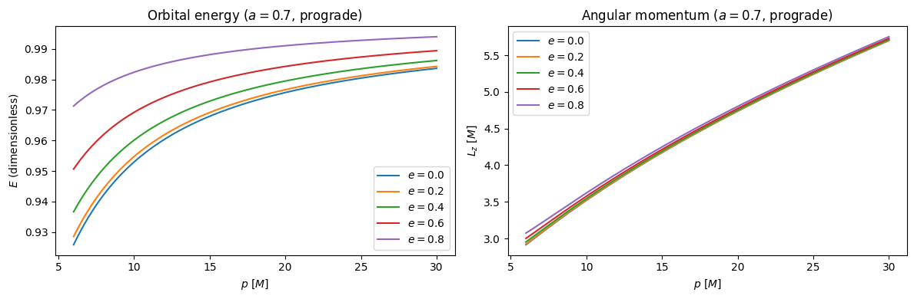
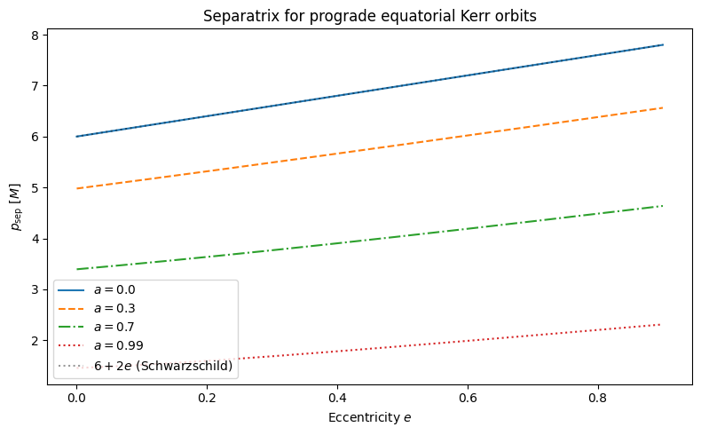
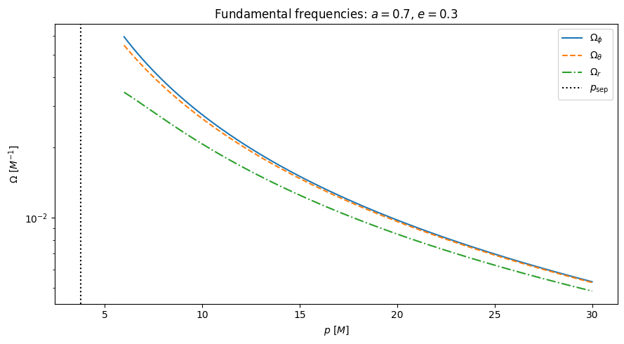
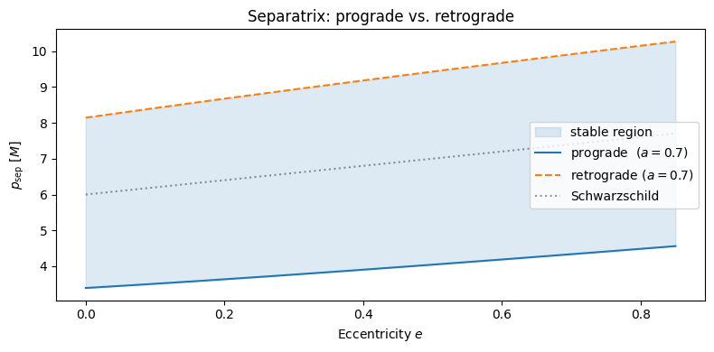

01 — Kerr Geodesics
This notebook covers the fewtrax.utils.geodesic module, which provides the mathematical foundations for the entire waveform pipeline.
Topics:
Orbital energy \(E(a, p, e)\) and angular momentum \(L_z(a, p, e)\)
The separatrix \(p_{\rm sep}(a, e)\) — the innermost stable orbit boundary
Boyer–Lindquist fundamental frequencies \(\Omega_\phi,\, \Omega_\theta,\, \Omega_r\)
JAX-differentiability of these quantities
Background
An EMRI consists of a stellar-mass compact object (the secondary, mass \(\mu \sim 10 M_\odot\)) orbiting a massive Kerr black hole (the primary, mass \(M \sim 10^6 M_\odot\)). Over many orbital periods the secondary slowly inspirals due to gravitational-wave emission.
For equatorial eccentric orbits in Boyer–Lindquist coordinates, the orbit is characterised by:
\(a \in [-1, 1]\): dimensionless BH spin (\(a>0\) prograde, \(a<0\) retrograde)
\(p\): semi-latus rectum (orbit scale, in units of \(M\))
\(e \in [0, 1)\): eccentricity
The radial turning points are \(r_{1,2} = p/(1 \mp e)\) (apocenter, pericenter).
Each orbit has two conserved quantities: specific energy \(E\) and specific \(z\)-angular momentum \(L_z\), given by closed-form expressions from Schmidt (2002).
[1]:
import os
import numpy as np
import matplotlib.pyplot as plt
import jax
import jax.numpy as jnp
jax.config.update("jax_enable_x64", True) # use 64-bit floats throughout
# Set the path to the FEW data directory.
# This notebook only uses geodesic utilities, which do not require data files.
# DATA_DIR is shown here for completeness; later notebooks will use it.
from dotenv import load_dotenv
load_dotenv()
DATA_DIR = os.getenv("FEW_DATA_DIR")
print(f"FEW_DATA_DIR = {DATA_DIR}")
FEW_DATA_DIR = /Users/bertd/Documents/PhD/LISA/Codes/FastEMRIWaveforms/src/few/data
[2]:
# Import the geodesic utilities
from fewtrax.utils.geodesic import (
kerr_geo_energy_equatorial,
kerr_geo_angular_momentum_equatorial,
get_separatrix,
get_fundamental_frequencies,
)
# Example parameters
a = 0.7 # BH spin
p = 10.0 # semi-latus rectum [M]
e = 0.4 # eccentricity
x = 1.0 # prograde (x = +1)
E = kerr_geo_energy_equatorial(a, p, e, x)
L = kerr_geo_angular_momentum_equatorial(a, p, e, x, E)
print(f"E = {float(E):.8f} (dimensionless specific energy)")
print(f"Lz = {float(L):.8f} (specific angular momentum [M])")
E = 0.96011768 (dimensionless specific energy)
Lz = 3.54553556 (specific angular momentum [M])
1.1 Orbital energy as a function of \(p\) and \(e\)
For a Kerr geodesic the energy \(E(a, p, e, x)\) is given by (Schmidt 2002, Eq. 28–32 specialised to equatorial)
where \(N\) and \(D\) are polynomials in \((a, p, e)\). For Schwarzschild (\(a=0\)) this reduces to the familiar \(E = \sqrt{1 - \frac{(1-e^2)(p-2-2e)(p-2+2e)}{p[(p-2)^2 - 4e^2]}}.\)
Below we visualise \(E\) as a function of \(p\) for several eccentricities.
[3]:
a = 0.7
p_grid = np.linspace(6, 30, 300)
fig, axes = plt.subplots(1, 2, figsize=(12, 4))
for e_val, color in zip([0.0, 0.2, 0.4, 0.6, 0.8], ["C0", "C1", "C2", "C3", "C4"]):
E_arr = np.array([float(kerr_geo_energy_equatorial(a, p, e_val, 1.0)) for p in p_grid])
L_arr = np.array([
float(kerr_geo_angular_momentum_equatorial(
a, p, e_val, 1.0,
kerr_geo_energy_equatorial(a, p, e_val, 1.0)
)) for p in p_grid
])
axes[0].plot(p_grid, E_arr, color=color, label=f"$e={e_val}$")
axes[1].plot(p_grid, L_arr, color=color, label=f"$e={e_val}$")
axes[0].set_xlabel("$p$ [$M$]")
axes[0].set_ylabel("$E$ (dimensionless)")
axes[0].set_title(f"Orbital energy ($a={a}$, prograde)")
axes[0].legend()
axes[1].set_xlabel("$p$ [$M$]")
axes[1].set_ylabel("$L_z$ [$M$]")
axes[1].set_title(f"Angular momentum ($a={a}$, prograde)")
axes[1].legend()
plt.tight_layout()
plt.show()

1.2 The Separatrix
The separatrix \(p_{\rm sep}(a, e)\) is the critical semi-latus rectum below which the orbit plunges into the black hole — it is the innermost stable eccentric orbit for given \((a, e)\).
Mathematically, \(p_{\rm sep}\) is the root of a degree-4 polynomial in \(p\) (Glampedakis & Kennefick 2002). In fewtrax it is found via 50-iteration bisection using jax.lax.fori_loop, which preserves JAX differentiability.
[4]:
e_grid = np.linspace(0.0, 0.9, 200)
fig, ax = plt.subplots(figsize=(8, 5))
for a_val, style in zip([0.0, 0.3, 0.7, 0.99], ["-", "--", "-.", ":"]):
p_sep_arr = np.array([float(get_separatrix(a_val, e, 1.0)) for e in e_grid])
ax.plot(e_grid, p_sep_arr, style, label=f"$a={a_val}$")
# Schwarzschild analytical reference
ax.plot(e_grid, 6 + 2*e_grid, "k:", alpha=0.4, label="$6+2e$ (Schwarzschild)")
ax.set_xlabel("Eccentricity $e$")
ax.set_ylabel("$p_{\\rm sep}$ [$M$]")
ax.set_title("Separatrix for prograde equatorial Kerr orbits")
ax.legend()
plt.tight_layout()
plt.show()

1.3 Fundamental Frequencies
Kerr geodesics are tri-periodic: the radial, polar and azimuthal motions have incommensurate periods in general. The three Boyer–Lindquist fundamental frequencies are:
expressed in units of \(M^{-1}\) (geometric time). These control the phase accumulation in the waveform:
For equatorial orbits \(\Omega_\theta = \Omega_\phi\) (precession of the orbital plane is absent), so only \(\Omega_\phi\) and \(\Omega_r\) are independent.
The frequencies involve complete elliptic integrals \(K(m)\), \(E(m)\), \(\Pi(n, k)\), which are computed via 64-point Gauss–Legendre quadrature in geodesic.py (JAX’s jax.scipy.special does not provide \(\Pi\)).
[5]:
a = 0.7
p_grid = np.linspace(6, 30, 300)
e = 0.3
Om_phi_arr = []
Om_theta_arr = []
Om_r_arr = []
for p_val in p_grid:
Ophi, Oth, Or = get_fundamental_frequencies(a, p_val, e, 1.0)
Om_phi_arr.append(float(Ophi))
Om_theta_arr.append(float(Oth))
Om_r_arr.append(float(Or))
fig, ax = plt.subplots(figsize=(9, 5))
ax.semilogy(p_grid, Om_phi_arr, label=r"$\Omega_\phi$")
ax.semilogy(p_grid, Om_theta_arr, "--", label=r"$\Omega_\theta$")
ax.semilogy(p_grid, Om_r_arr, "-.", label=r"$\Omega_r$")
ax.axvline(float(get_separatrix(a, e, 1.0)), color="k", linestyle=":", label="$p_{\\rm sep}$")
ax.set_xlabel("$p$ [$M$]")
ax.set_ylabel(r"$\Omega$ [$M^{-1}$]")
ax.set_title(f"Fundamental frequencies: $a={a}$, $e={e}$")
ax.legend()
plt.tight_layout()
plt.show()

Note that \(\Omega_\theta = \Omega_\phi\) for equatorial orbits, and all frequencies diverge as \(p \to p_{\rm sep}\). At the separatrix the framework becomes unstabe and is cut off.
1.4 JAX Differentiability
All geodesic functions are JAX-differentiable. This enables gradient-based parameter estimation. Let’s verify by computing \(\partial E / \partial p\) and \(\partial \Omega_\phi / \partial p\) analytically via jax.grad:
[6]:
a, e, x = 0.7, 0.4, 1.0
# Scalar gradient of energy w.r.t. p
dEdp_fn = jax.grad(lambda p: kerr_geo_energy_equatorial(a, p, e, x))
dOmpdp_fn = jax.grad(lambda p: get_fundamental_frequencies(a, p, e, x)[0])
p_vals = [8.0, 10.0, 15.0, 20.0]
print(f"{'p':>6} {'dE/dp':>12} {'dΩφ/dp':>14}")
print("-" * 38)
for pv in p_vals:
pj = jnp.float64(pv)
print(f"{pv:6.1f} {float(dEdp_fn(pj)):12.6e} {float(dOmpdp_fn(pj)):14.6e}")
p dE/dp dΩφ/dp
--------------------------------------
8.0 5.622196e-03 -6.769769e-03
10.0 3.754099e-03 -3.820697e-03
15.0 1.743198e-03 -1.366633e-03
20.0 9.986870e-04 -6.613642e-04
Finite-difference check to verify the analytic gradients:
[7]:
p0 = jnp.float64(10.0)
h = jnp.float64(1e-5)
dEdp_fd = (kerr_geo_energy_equatorial(a, p0+h, e, x)
- kerr_geo_energy_equatorial(a, p0-h, e, x)) / (2*h)
dEdp_ad = dEdp_fn(p0)
print(f"dE/dp (finite difference): {float(dEdp_fd):.8e}")
print(f"dE/dp (JAX autodiff) : {float(dEdp_ad):.8e}")
print(f"Relative error: {abs(float(dEdp_fd)-float(dEdp_ad))/abs(float(dEdp_ad)):.2e}")
dE/dp (finite difference): 3.75409922e-03
dE/dp (JAX autodiff) : 3.75409922e-03
Relative error: 2.41e-10
1.5 Retrograde vs. Prograde Orbits
For retrograde orbits (\(x = -1\), or equivalently \(a < 0\)), the separatrix is larger — retrograde orbits are less tightly bound — and the angular momentum \(L_z < 0\).
[8]:
e_grid = np.linspace(0.0, 0.85, 150)
a = 0.7
p_sep_pro = np.array([float(get_separatrix( a, e, +1.0)) for e in e_grid])
p_sep_retro = np.array([float(get_separatrix(a, e, -1.0)) for e in e_grid])
fig, ax = plt.subplots(figsize=(8, 4))
ax.fill_between(e_grid, p_sep_pro, p_sep_retro, alpha=0.15, color="C0", label="stable region")
ax.plot(e_grid, p_sep_pro, label=f"prograde ($a={a}$)")
ax.plot(e_grid, p_sep_retro, "--", label=f"retrograde ($a={a}$)")
ax.plot(e_grid, 6+2*e_grid, "k:", alpha=0.4, label="Schwarzschild")
ax.set_xlabel("Eccentricity $e$")
ax.set_ylabel("$p_{\\rm sep}$ [$M$]")
ax.legend()
ax.set_title("Separatrix: prograde vs. retrograde")
plt.tight_layout()
plt.show()

Summary
Function |
Source |
Notes |
|---|---|---|
|
Schmidt (2002) |
Closed-form; JIT + differentiable |
|
Schmidt (2002) |
Needs \(E\) as input |
|
Glampedakis & Kennefick (2002) |
|
|
Schmidt (2002) |
Uses 64-pt GL quadrature for \(\Pi(n,k)\) |
Next: 02_emri_trajectory.ipynb — how these geodesic quantities drive the adiabatic inspiral ODE.
[ ]: